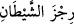

ayaklarınızı sabit kılmak” kumda kaymasını önlemek veya kalbleri Allah’a bağlayıp
takviye etmek suretiyle savaş esnasında ayakların yere sağlam basmasını
gerçekleştirmek -Çünkü savaşta ayaklar ancak kalb kuvvetiyle, kalbde sabır ve cesaret
bulunduğu zaman sabit olur- “için üzerinize gökten bir su (yağmur) indiriyordu.”
“
” yani şeytanın pisliği ile onların başına gelen ihtilamın kastedildiği de
söylenir. Çünkü ihtilam, şeytanın verdiği hayal ve vesveseden kaynaklanır.
“
”de “
” kelimesinin getirilmesi, müminlerin kalblerinin artık bu
güçlendirme ve takviye ile dolup taştığını bildirmek içindir.
Ey gönül! Aşıklıkta sâbit kadem ol
Çünkü bu yolda yapılan iş, ecirsiz kalmaz
Sahabe-i kiram, doğruluk, sabır, kalbin metâneti ve sabit kadem olmak bakımından
kıyamete kadar herkesten öne geçmişlerdir. Kimsenin başkasından diyanet ve takvadan
başka üstünlüğü yoktur.
İmam Zührî anlatıyor: Abdülmelik b. Mervan’ın yanına vardım. Bana:
“–Nereden geliyorsun, ey Zührî?” dedi.
“–Mekke’den.” dedim.
“–Mekke ahalisine öncülük etmesi için yerine kimi bıraktın?” diye sordu.
“–Ata b. Ebû Rebâh’ı.” dedim.
“–O Araplar’dan mı, mevâlîden mi?” diye sordu. Ben:
“–Mevâlîden.”[10] dedim.
“–Peki hangi özelliği ile onlara önder oldu?” diye sordu.
“–Diyânet ve rivayeti ile.” dedim.
“–Evet, ben de aynı kanaatteyim. Diyânet ve rivayet sâhibi olanlar insanlara öncülük
etmelidir. Peki, Yemen ahalisine kim öncülük ediyor?” diye sordu. Ben:
“–Tâvus b. Keysan.” dedim.
“–O, Araplar’dan mı mevâlîden mi?” diye sordu.
“–Mevâlîden.” dedim.
“–Hangi özelliği ile insanlara önder oldu?” diye sordu. Ben:
“–Ata’nın sahip olduğu özelliklerle.” dedim.
“–Böyle olanların insanlara öncülük etmesi gerekir. Peki Mısır ahalisine kim öncülük
ediyor?” diye sordu.
“–Yezid b. Ebû Habib.” dedim.
“–O, Araplar’dan mı mevâlîden mi?” dedi.
“–Mevâlîden.” dedim. Onun hakkında da öncekiler hakkında söylediklerini söyledi.
Sonra
“–Peki Şam ahalisine kim öncülük ediyor?” dedi.